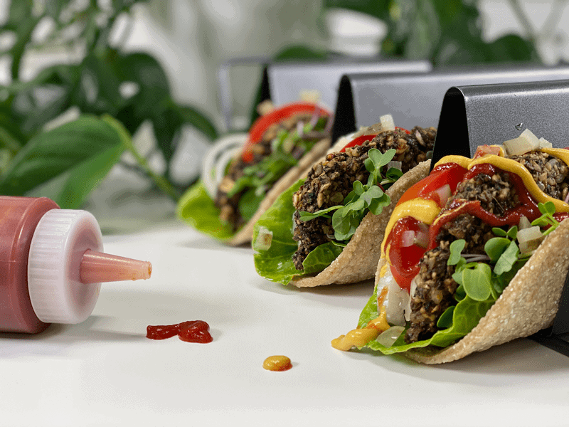
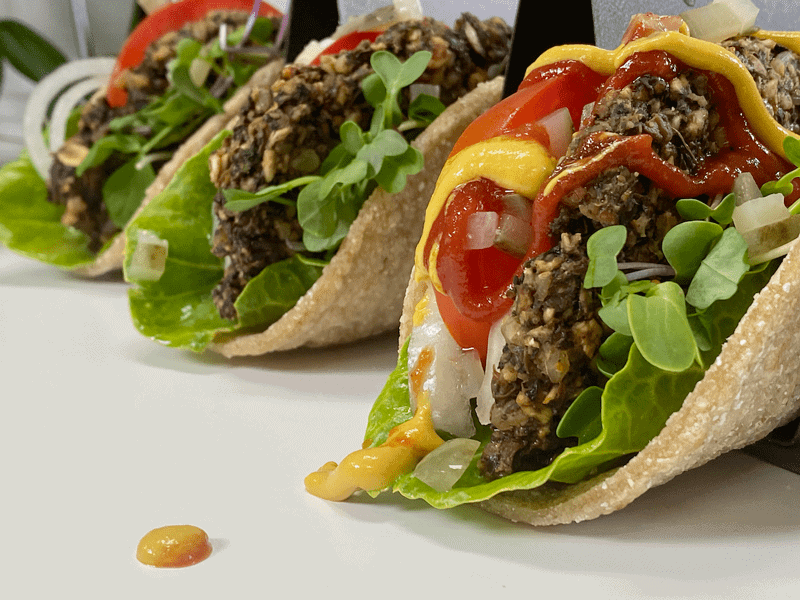
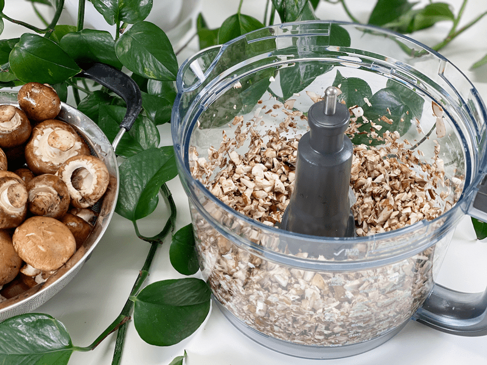
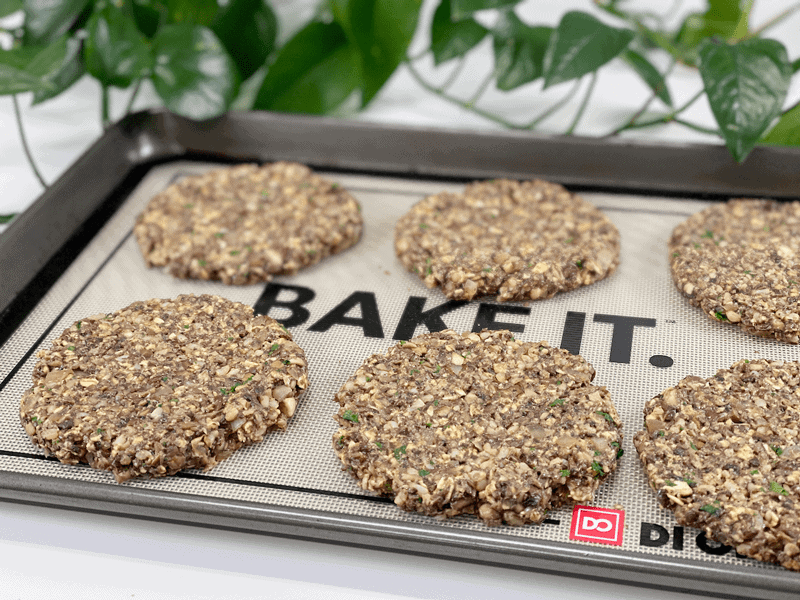
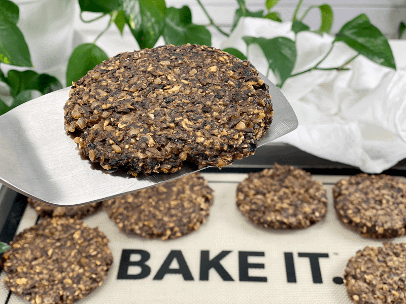
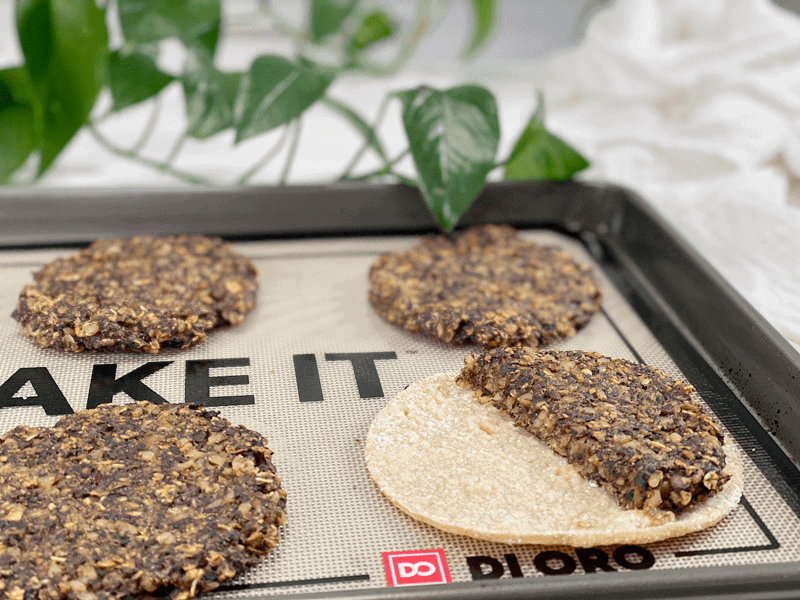
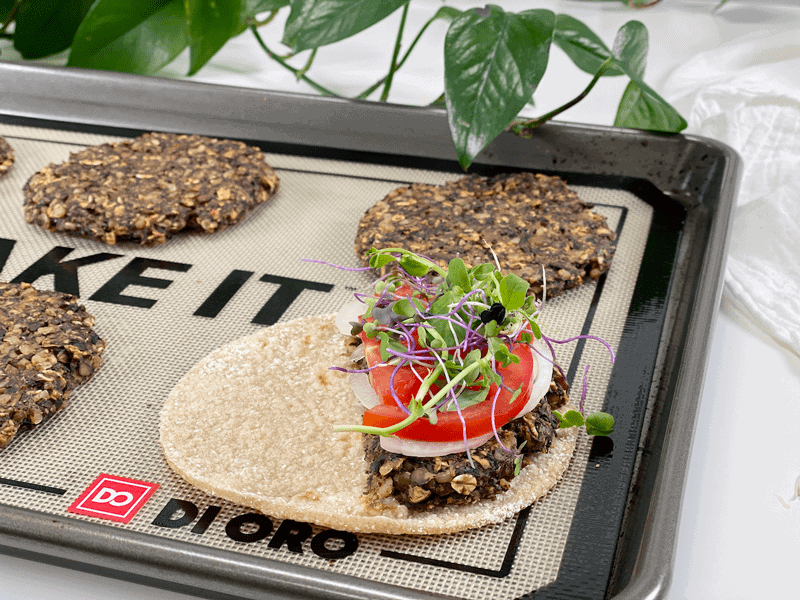
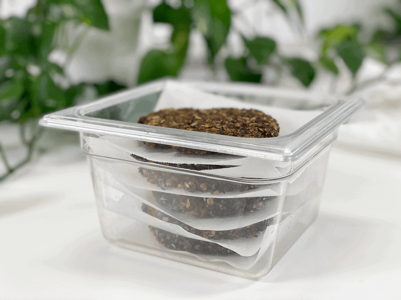

Mushroom Burger Wrap | Oil-Free | Gluten-Free
These mushroom burgers had me swooning and singing “I’m in Heaven” with each bite I took. No exaggeration, my friends. I would not be fibbing with you. The balance between flavor and texture was exactly what I needed and was looking for. I had some oat tortillas in the fridge, so I decided to make a burger wrap. I ate two. (looks sheepish) Actually, now that I think about it — one and a half. Bob saw what I was eating and asked for a bite; he then proceeded to walk off with the rest of it. We have now enjoyed burger wraps for three days in a row.

The recipe for the mushroom burgers is the same one I put together for the meatballs which you can view (here). I was going to add this to that post, but I know when people look at recipes they come with a preconceived idea as to what they want to make. If you wanted to make a vegan burger but didn’t see that in the title–well, it might get overlooked. I hope I didn’t overexplain that. My husband teases me that I always share the girl-version of everything.
I will try to give you the boy-version of what that means. When it comes to explaining things, there is a boy-version and a girl-version. The boy-version is to the point, using the least amount of words to get the point across. The girl-version is lengthy, full of emotion, hand gestures, and story. Every detail is mapped out. It’s our little joke with one another. When we want to share something with each other we ask, “Do you have time for the boy or girl version?” Now that I think about it, I always map out my recipes in the girl-version. I hope you don’t mind.

Ingredient Run-Down
Mushrooms
- I used my all-time favorite, fresh organic crimini mushrooms. They are small to medium in size and have a rounded cap with a short, stubby stem. The smooth cap ranges from light to dark brown and is firm and spongy. The short white stem is also edible, so I diced them up as well–no waste. They are mild and somewhat earthy, with a meaty texture.
- If you don’t like to eat the mushroom stalks, pop them off and save for making soup stock.
- Time-saving tip: I have made these over and over…this time I doubled the recipe and to reduce my prep time with chopping 2 pounds of mushrooms, I pulsed them in the food processor, fitted with an “S” blade, in small batches.
Ground Flaxseed
- You don’t want to omit this ingredient, since it acts as a binder to hold all the ingredients together. If you can’t consume them or don’t have them on hand, you can substitute them with ground chia seeds or even some powdered psyllium seeds.
Rolled Oats and Brown Rice
- These two ingredients not only add bulk to the patties, they take the place of traditional bread crumbs. If you need assistance in making brown rice that is more nutrient-dense, click (here).
- To ensure that your oats are gluten-free and not cross-contaminated, look for a brand that states “gluten-free” on the bag.
Nutritional Yeast
- Nutritional yeast is a dairy-free savory food seasoning especially favored by vegans for its cheese-like flavor.
- Many (but not all) nutritional yeast brands are fortified with vitamin B12, which is usually found only in animal products.
- It adds another layer of flavor to the overall recipe–“umami,” which is known as “the fifth taste.”

Make Every Bite Count
- Be sure to soak the brown rice before cooking it. You can read more about that in the link below on how to cook rice.
- Add kombu seaweed to any of the grains, beans, legumes, or soups you cook. Read why (here).
- Have you ever head of aerophagia? It’s the result of swallowing a lot of air — enough to make you burp frequently or upset your stomach. It can be a nervous habit, but you also might get it if you eat, chew, or talk quickly. You take in so much air that it makes your stomach feel bloated and uncomfortable. Chewing gum can make it worse. Of course, this is a health issue that a doctor diagnoses, but my take away is to slow down while eating, chew with your mouth closed, and eat only when in a calm state.
Enhance your mushroom burger by topping it with my vegan American Cheese Singles, homemade ketchup, sweet and spicy mustard, and pickles. (Savory Refrigerator Zucchini Pickles | No Canning, Bread and Butter Refrigerator Zucchini Pickles, Sweet Bread and Butter Overnight Pickles or Jalapeño and Fennel Infused Pickles — so many delicious options!) I hope you enjoy this recipe as much as we have. blessings and health, amie sue
 Ingredients
Ingredients
Yields 9 (1/2 cup per patty, pressed to 4.5″)
Preparation
Sauté Mushrooms & Onions
- Before using the mushrooms, remove any soil and grit. If necessary, trim the ends of the stalks.
- Place a large frying pan over medium heat, add the chopped mushrooms and diced onions. Cook until the mushrooms turn darker brown (not burnt, but brown)
- Mushrooms contain a lot of moisture, so you don’t need any water to do the typical water sauté. It might fool you at first, but just keep stirring it around, and soon you will start to see the liquid release.
- I cooked mine until almost all the water released cooked back up, which took nearly 10 minutes. Don’t let them dry out.
- While keeping an eye on the pan, in a small bowl, whisk together the ground flax and water. Set aside.
- Once the mushrooms and onion have fully cooked down, reduce the heat to low.
Assembly
- Preheat the oven to 425 degrees (F) and line a baking pan with parchment paper. Set aside.
- Add the oats, rice, parsley, nutritional yeast, flax paste, garlic powder, oregano, parsley, salt, and pepper to the pan with the cooked mushrooms. Stir everything together, making sure the spices are evenly dispersed. Cook for about 10 minutes for the flavors to meld together.
- Place the mixture in the food processor, fitted with the “S” blade, and pulse several times to create a batter that sticks together when rolled into a bowl.
- I made these without doing the food processor step, and they didn’t hold together very well.
- Just be careful that you don’t create a paté. You want a little texture.
- Using a 1/2 cup measurement, roll the batter into the palm of your hands to create a ball shape and place on a parchment-lined baking pan.
- To prevent the batter from sticking to your hands, have a little bowl of water alongside you; wet your hands as needed.
- Press into a patty shape. I made mine about 4 1/2″ round.
- Bake for 35-45 minutes, flipping them halfway through.
- I used the convection bake feature on my oven, so be sure to watch the meatless patties the first time you bake them. Document the cooking time that works with your oven.
- Enjoy right away. If you have leftovers, they can be stored in an airtight container in the fridge (5 days) or freezer (up to 3 months). To reheat, place in the oven set at 400 degrees for roughly 10 minutes until warmed through.
- The other day, I walked into the kitchen to find Bob toasting one of these patties. I am pleased to share that this works out to be a great way to reheat them!
-

-
Time-saving tip: rather than hand-slicing 2 pounds of mushrooms, place small batches in the food processor and pulse it a few times to chop them. Repeat until all the mushrooms have been chopped up.
-

-
Dry sauté the diced mushrooms and onions.
-

-
As they cook, the mushrooms start to release water, which helps with the sauté process.
-

-
After the mushrooms and onions are done cooking, mix in all of the remaining ingredients.
-

-
Press the patties into the desired size and bake.
-

-
Here they are, all baked and ready to be enjoyed.
-

-
To construct the burger wrap, cut one burger in half and place on the wrap.
-

-
Pile any condiments you wish on the patty, fold, and enjoy!
-

-

-
This is how I stored my leftovers in the fridge (naturally, with a lid on top).
© AmieSue.com